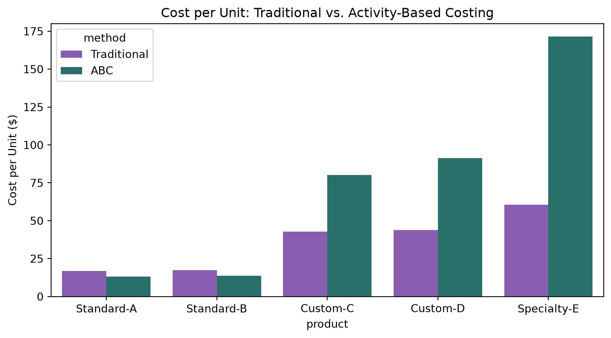
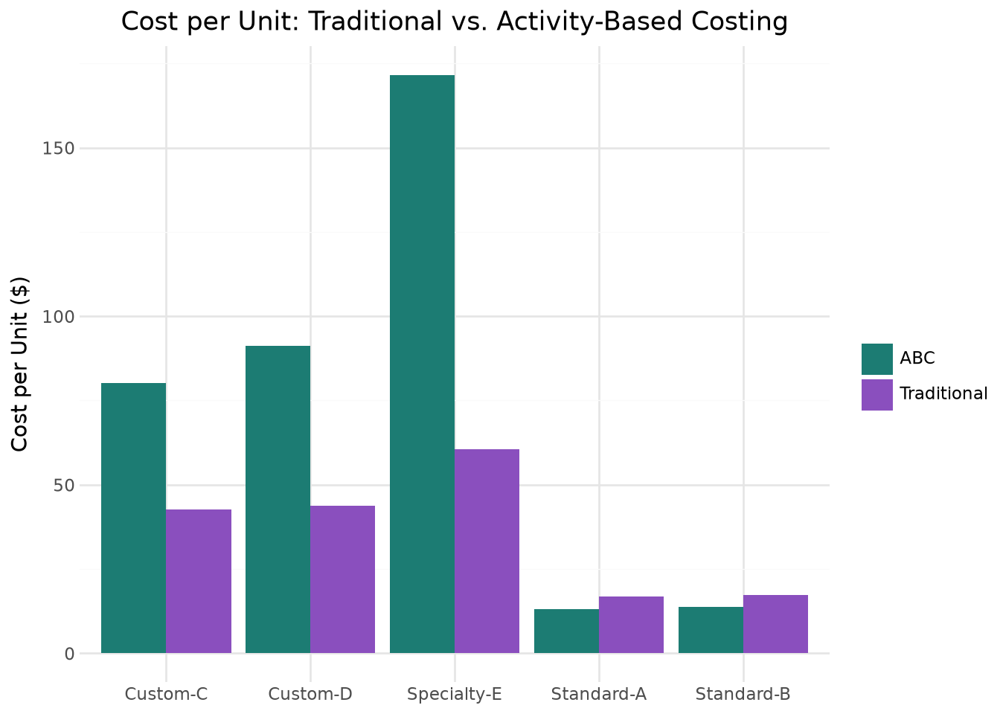

By the end of this chapter, you should be able to:
Distinguish management accounting analytics from the financial accounting analytics covered in Chapter 7
Compute and interpret standard costing variances for materials, labor, and overhead
Perform cost-volume-profit (CVP) analysis, including break-even point, margin of safety, and target profit
Compare traditional overhead allocation to activity-based costing (ABC), and explain when the two produce meaningfully different product costs
Build management-facing visualizations for internal decision-making
Perform all of the above using both pandas and polars, and visualize results with both seaborn and plotnine
8.1 Financial vs. Management Accounting Analytics
Chapter 7 analyzed financial statements the way an outside investor or lender would: ratios computed from GAAP-based, externally reported numbers, governed by accounting standards and audited for accuracy. Management accounting serves a different audience entirely — the people running the business day to day — and follows different rules, or more precisely, no externally mandated rules at all. A budget variance report, a break-even analysis, or an internal product costing model never gets filed with the SEC or audited by an external firm; it exists purely to help managers make better decisions, which means it can be structured however is most useful internally.
This chapter covers three of the most common management accounting analytics tasks: standard costing variance analysis (did we spend what we expected to, and why not?), cost-volume-profit analysis (how many units do we need to sell to be profitable?), and activity-based costing (are we allocating overhead to products in a way that reflects how they actually consume resources?).
We’ll use a fictional manufacturer’s data: manufacturing_variance_data.csv (12 months of standard costing detail), cvp_monthly_data.csv (monthly unit economics), and abc_cost_data.csv (a five-product overhead allocation comparison).
import pandas as pdvariance_pd = pd.read_csv("data/manufacturing_variance_data.csv")variance_pd.head()
month
units_produced
std_materials_qty_per_unit
std_materials_price
actual_materials_qty_total
actual_materials_price
std_labor_hours_per_unit
std_labor_rate
actual_labor_hours_total
actual_labor_rate
std_var_oh_rate_per_labor_hr
actual_var_oh_total
budgeted_fixed_oh
actual_fixed_oh
0
2025-01
3943
3.0
4.5
11453.4
4.464
0.75
22.0
2910.5
22.19
8.0
24575.32
42000
44003.67
1
2025-02
4022
3.0
4.5
11680.0
4.620
0.75
22.0
2884.4
21.34
8.0
22296.78
42000
43327.21
2
2025-03
4882
3.0
4.5
14888.6
4.499
0.75
22.0
3724.7
22.26
8.0
30528.45
42000
43944.08
3
2025-04
4162
3.0
4.5
12359.6
4.548
0.75
22.0
2915.8
22.51
8.0
22697.34
42000
39148.50
4
2025-05
3915
3.0
4.5
12050.9
4.573
0.75
22.0
3028.8
21.61
8.0
23269.99
42000
43761.73
import polars as plvariance_pl = pl.read_csv("data/manufacturing_variance_data.csv")variance_pl.head()
shape: (5, 14)
month
units_produced
std_materials_qty_per_unit
std_materials_price
actual_materials_qty_total
actual_materials_price
std_labor_hours_per_unit
std_labor_rate
actual_labor_hours_total
actual_labor_rate
std_var_oh_rate_per_labor_hr
actual_var_oh_total
budgeted_fixed_oh
actual_fixed_oh
str
i64
f64
f64
f64
f64
f64
f64
f64
f64
f64
f64
i64
f64
"2025-01"
3943
3.0
4.5
11453.4
4.464
0.75
22.0
2910.5
22.19
8.0
24575.32
42000
44003.67
"2025-02"
4022
3.0
4.5
11680.0
4.62
0.75
22.0
2884.4
21.34
8.0
22296.78
42000
43327.21
"2025-03"
4882
3.0
4.5
14888.6
4.499
0.75
22.0
3724.7
22.26
8.0
30528.45
42000
43944.08
"2025-04"
4162
3.0
4.5
12359.6
4.548
0.75
22.0
2915.8
22.51
8.0
22697.34
42000
39148.5
"2025-05"
3915
3.0
4.5
12050.9
4.573
0.75
22.0
3028.8
21.61
8.0
23269.99
42000
43761.73
8.2 Standard Costing Variance Analysis
A standard cost is the cost a company expects to incur per unit under normal, efficient operating conditions — a predetermined benchmark set before the period begins. Comparing actual costs to this standard, and breaking the difference into specific causes, is the foundation of management accounting’s cost control toolkit.
8.2.1 Materials Variances
The total difference between actual and standard materials cost splits into two independent causes: did we pay a different price per unit of material, and did we use a different quantity than the standard allows for the output we actually produced? Figure 8.1 shows the total material variance.
By convention, a positive variance here means actual cost exceeded standard cost — unfavorable. A negative variance means actual cost was less than standard — favorable. This convention (rather than always reporting an absolute value) preserves the direction of the difference, which is exactly the information a manager needs to know whether to investigate a problem or recognize an improvement.
The materials price variance is unfavorable by about $13,600 for the year — actual material prices ran above standard, consistent with a gradual price increase over the year. The materials quantity variance is a smaller unfavorable $2,700 — usage was close to standard, with only modest waste.
8.2.2 Labor Variances
Labor variances follow the same logic: a rate variance (did we pay a different wage than standard?) and an efficiency variance (did it take more or fewer hours than standard for the output produced?).
The labor efficiency variance is favorable by roughly $30,600 — the workforce is completing units in meaningfully fewer hours than the standard allows, consistent with a learning-curve effect as workers become more practiced over the year. This is the single largest variance in the whole dataset, and it’s favorable — a genuinely positive operational story.
8.2.3 Overhead Variances
Overhead variances measure the difference between actual manufacturing overhead costs and applied standard costs. Variable overhead splits into spending and efficiency variances based on activity levels. Variable overhead variances are very similar in terms of computation to materials and labor variances. Fixed overhead splits into spending (budget) and volume variances based on capacity and production.
Fixed overhead costs remain constant in total regardless of changes in production volume within a relevant range. Figure 8.2 shows total fixed cost overhead variance breakdown.
No single variance tells the whole story. Rising material prices (unfavorable) are being more than offset by a strong labor efficiency gain (favorable) — a pattern only visible by looking at all four variances side by side. A manager who only reviewed the materials price variance might conclude the year was purely a story of rising input costs, missing the larger, favorable efficiency story happening in labor. This is the same lesson from Chapter 7’s DuPont analysis: a single number in isolation can mislead, and decomposition reveals the real drivers.
8.3 Cost-Volume-Profit (CVP) Analysis
CVP analysis answers a different question: given our cost structure1, how many units do we need to sell to break even, and how much cushion do we currently have above that point?
The contribution margin per unit represents the amount of money each individual item sold contributes toward covering your company’s fixed costs. It isolates profitability at the product level by stripping away fixed constraints, subtracting only the variable costs—such as raw materials, direct labor, and sales commissions—from the unit’s selling price.
The contribution margin ratio expresses your profit margins as a clean percentage of total sales revenue rather than a flat dollar amount. By dividing the contribution margin by total sales, you instantly see what percentage of each dollar generated is available to pay down fixed overhead and fund bottom-line profits. This ratio is a vital tool for managers forecasting profitability, as it allows you to quickly calculate how a sudden 10% increase or decrease in gross sales volume will mathematically impact net income.
The break-even point in units calculates the exact physical quantity of product your business must manufacture and sell to achieve a net income of zero. To find this number, total fixed costs are divided by the contribution margin per unit, revealing the baseline production target required to avoid losing money. Tracking this metric gives operations managers a clear, tangible daily or monthly sales quota that production teams must hit before the business can claim true profitability.
The break-even point in dollars translates your operational baseline into a concrete financial revenue target, dictating the total sales volume needed to perfectly balance the books. By dividing total fixed costs by the contribution margin ratio, this formula determines the gross cash inflow required to cover all combined variable and fixed expenses. This dollar-centric metric is highly prized by executives and lenders, as it provides a universal benchmark to evaluate financial risk and measure safety margins against actual sales forecasts.
The Margin of Safety (or safety margin) is a financial metric that measures the cushion a business has between its current or projected sales volume and its break-even point. It represents the amount by which sales can drop before the business begins to lose money, serving as a critical indicator of financial risk. A high margin of safety means the business is well-protected against economic downturns or sales drops, while a low margin indicates high risk.
\[
\begin{split}
\text{Contribution Margin per Unit} = & \text{Selling Price per Unit} \\
& - \text{Variable Cost per Unit}
\end{split}
\]
\[
\begin{split}
\text{Contribution Margin Ratio} = & \frac{\text{Contribution Margin per Unit}}{\text{Selling Price per Unit}}
\end{split}
\]
\[
\begin{split}
\text{Break-Even Point (Units)} = & \frac{\text{Fixed Costs}}{\text{Contribution Margin per Unit}}
\end{split}
\]
The contribution margin ratio sits consistently around 30-33%, and the margin of safety — how far actual sales exceed the break-even point — ranges from roughly 24% to 46% across months. Every month in this dataset operated safely above break-even, but with meaningfully more cushion in some months (June, September) than others (January, May).
The break-even point sits at roughly 2,570 units per month — well below every month’s actual sales volume in this dataset (all above 3,700 units), consistent with the healthy margin of safety percentages computed above.
8.3.3 Target Profit Analysis
CVP logic extends naturally to a different question: how many units are needed to hit a specific profit target, not just to break even?
target_profit =30000target_units = (avg_fc + target_profit) / (avg_price - avg_vc)print(f"Units needed for a ${target_profit:,} monthly target profit: {target_units:.0f}")
Units needed for a $30,000 monthly target profit: 4393
8.4 Activity-Based Costing (ABC)
Traditional overhead allocation spreads all manufacturing overhead across products using a single base — often machine hours or direct labor hours. This works reasonably well when products consume overhead resources in roughly the same proportions. When products differ substantially in complexity, it can systematically distort product costs.
Notice the pattern: Standard-A and Standard-B are produced in large volumes with relatively few setups or inspections per unit — simple, high-volume products. Custom-C, Custom-D, and Specialty-E are produced in much smaller volumes but require a disproportionate number of setups and inspections — complex, low-volume products.
8.4.1 Traditional Allocation (Single Base: Machine Hours)
ABC instead splits overhead into pools tied to specific activities, each allocated using the cost driver that actually causes that cost — setups, inspections, and machine time each get their own rate.
comparison = products_pd.melt( id_vars="product", value_vars=["traditional_cost_per_unit", "abc_cost_per_unit"], var_name="method", value_name="cost_per_unit")comparison["method"] = comparison["method"].map({"traditional_cost_per_unit": "Traditional", "abc_cost_per_unit": "ABC"})plt.figure(figsize=(8, 4.5))sns.barplot(data=comparison, x="product", y="cost_per_unit", hue="method", palette={"Traditional": "#8a4fbe", "ABC": "#1c7c73"})plt.title("Cost per Unit: Traditional vs. Activity-Based Costing")plt.ylabel("Cost per Unit ($)")plt.tight_layout()plt.show()

( ggplot(comparison, aes(x="product", y="cost_per_unit", fill="method"))+ geom_col(position="dodge")+ scale_fill_manual(values={"Traditional": "#8a4fbe", "ABC": "#1c7c73"})+ labs(title="Cost per Unit: Traditional vs. Activity-Based Costing", x="", y="Cost per Unit ($)", fill="")+ theme_minimal())

ImportantThe Classic ABC Finding, Reproduced Here
Look at the direction of every difference: Standard-A and Standard-B — the high-volume, simple products — cost less per unit under ABC than under traditional allocation. Custom-C, Custom-D, and especially Specialty-E — the low-volume, complex products — cost dramatically more per unit under ABC, with Specialty-E’s cost increasing by nearly $111 per unit.
This is precisely the textbook ABC finding: traditional single-base allocation systematically undercosts low-volume, complex products (since they don’t consume much machine time, even though they generate disproportionate setup and inspection activity) while overcosting high-volume, simple products. A company pricing Specialty-E based on its traditional-costing number could be selling it at a loss without realizing it — exactly the kind of decision-relevant insight management accounting analytics is meant to surface.
8.5 Chapter Summary
Management accounting analytics serves internal decision-makers rather than external stakeholders, and isn’t bound by GAAP or subject to external audit — its only test is whether it helps managers make better decisions.
Standard costing variances decompose the gap between actual and expected cost into specific, actionable causes: price/rate variances (did we pay more or less?) and quantity/efficiency variances (did we use more or less than the standard allows?).
No single variance should be read in isolation — in this chapter, a real cost increase (materials price) was more than offset by a real efficiency gain (labor), a pattern only visible when every variance is viewed together.
CVP analysis (contribution margin, break-even point, margin of safety, target profit) answers different but related operational questions than variance analysis, focused on volume and profitability rather than cost control.
Traditional overhead allocation and activity-based costing can produce meaningfully different product costs whenever products vary substantially in production complexity — ABC’s multiple cost-driver approach corrects for a bias that a single allocation base cannot.
Every technique in this chapter was implemented in both pandas and polars, and visualized in both seaborn and plotnine, following the same dual-tooling approach used throughout this book.
8.6 Discussion Questions
The labor efficiency variance was the largest single variance in this chapter, and it was favorable. What follow-up questions would you want answered before concluding this reflects genuine, sustainable operational improvement rather than, say, a one-time factor?
If a manager only reviewed the materials price variance without also looking at the labor efficiency variance, what incorrect conclusion might they draw about the year’s cost performance?
Specialty-E’s cost per unit rises by nearly $111 under ABC. If this company had been pricing Specialty-E based on the traditional cost figure, what business risk does that create, and what would you recommend management do next?
8.7 Exercises
Recompute the fixed overhead volume variance (the difference between budgeted fixed overhead and fixed overhead applied based on standard hours allowed for actual production) — a variance not covered in this chapter — using manufacturing_variance_data.csv.
Using cvp_monthly_data.csv, calculate the sales volume (in units) needed to increase monthly target profit by 20% compared to this chapter’s $30,000 example, and explain whether that volume looks achievable given the historical range of units_sold in the dataset.
Add a sixth, hypothetical product to abc_cost_data.csv with very high volume but also very high setup/inspection activity (unlike any current product). Recompute both traditional and ABC costs for it — does the usual “high volume means ABC lowers cost” pattern still hold?
Using either pandas or polars, calculate each product’s overhead allocation as a percentage of total cost under both traditional and ABC methods. Which product’s overhead percentage changes the most, and does that match your intuition from the cost-per-unit chart in this chapter?
Cost structure refers to the proportion of variable and fixed cost in total cost. For example, if total cost is $100, variable cost could be $40 and fixed cost then is $60 or vice versa. Then, cost structure is variable cost is 40% and fixed cost is 60%. Cost structure has critical implications while managers make decisions.↩︎